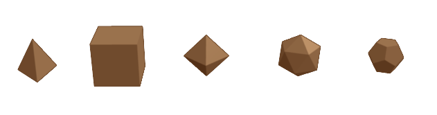

Bienvenue sur ma page web
Ce site a pour but de réunir quelques documents que j'ai rédigés. Dans l'onglet « Enseignement » vous trouverez différentes fiches destinées aux étudiants de CPGE ainsi que les exercices que je donne en colle. Vous trouverez également dans l'onglet « Agrégation » les différents développements que j'ai rédigé dans le cadre de ma préparation à l'agrégation. Dans l’onglet « Diffusion des mathématiques », vous pourrez découvrir mes interventions auprès des élèves ainsi que mon engagement dans différents projets de médiation scientifique.

Contact : geoffrey.deperle@gmail.com